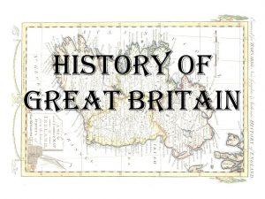

The island of Great Britain lies in the Atlantic Ocean , between the Irish Sea and the North Atlantic to the west, the North Sea to the east and the English Channel to the southeast, on the northwest coast of the European continent. [2] With an area of 229,850 km² [1], the main island is the ninth largest island in the world [3] and the largest island in Europe and the British Isles , which include Ireland and the Isle of Man . In ancient times, England and Wales formed the Roman province of Britannia .
Britain was permanently settled by humans around twelve thousand years ago. Even before that, there were already people in the area, but they were unable to establish themselves permanently. [1] No writing was developed in pre-Roman times , so the culture and lifestyle of the inhabitants are reconstructed based on archaeological finds and findings.
